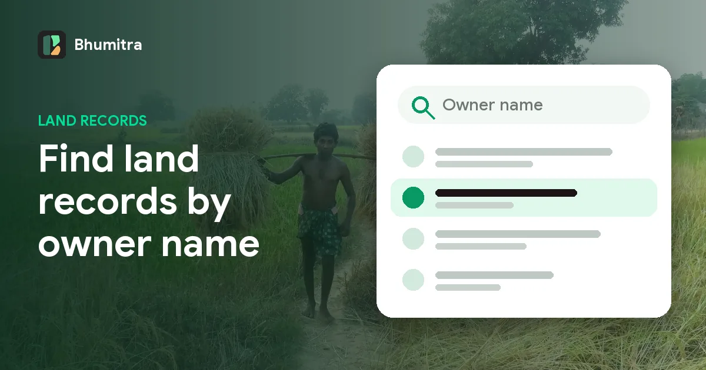
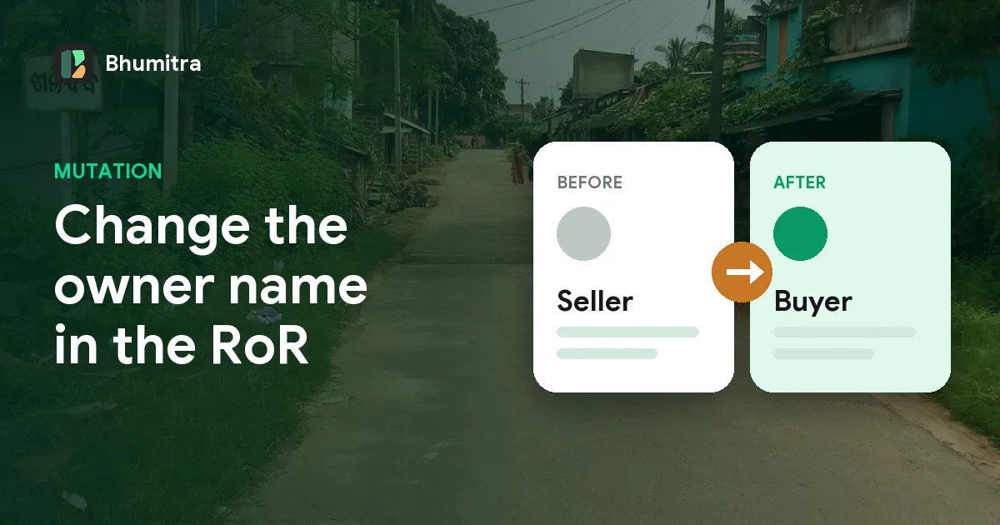
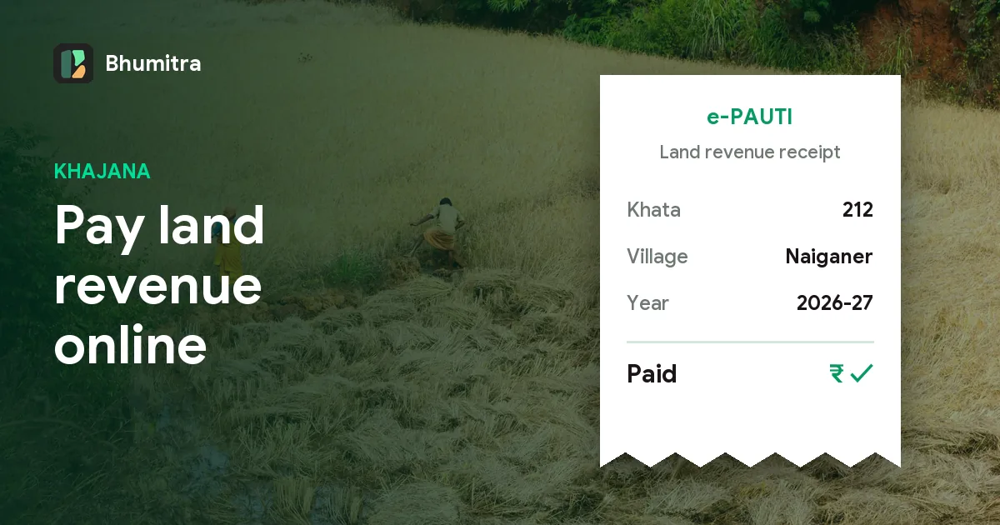
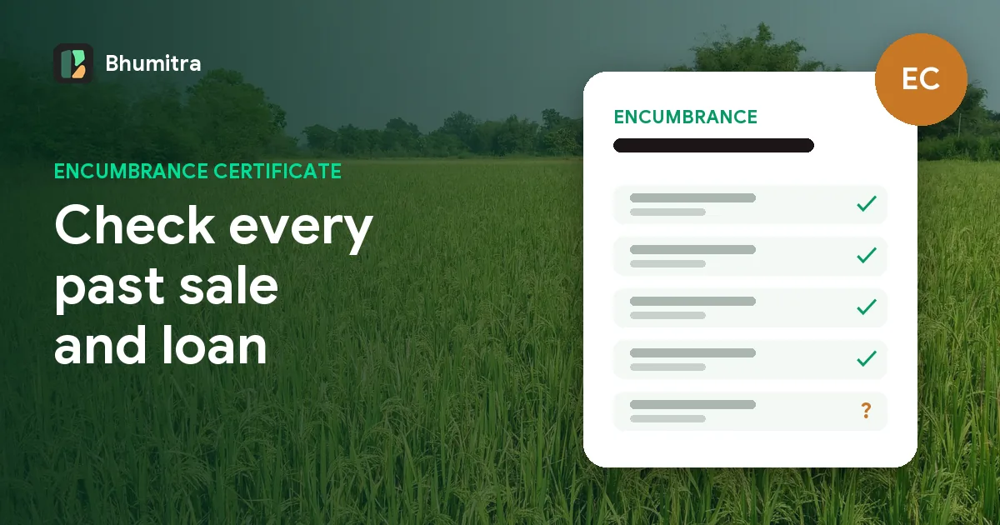
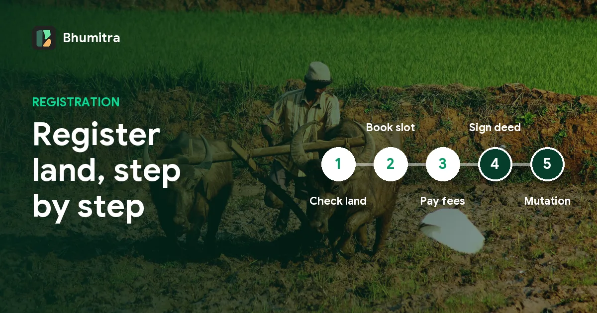
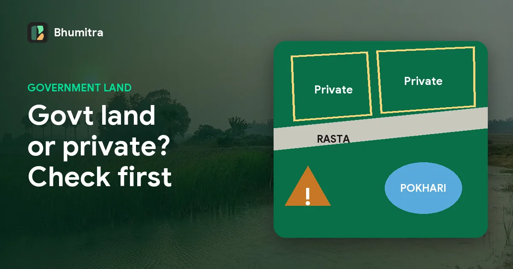
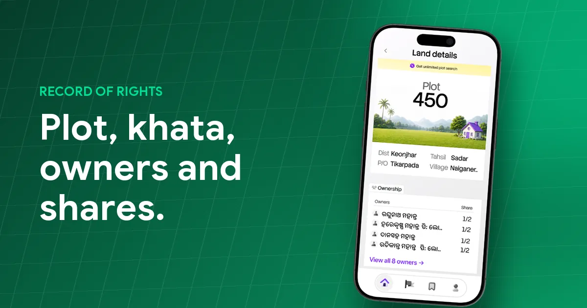
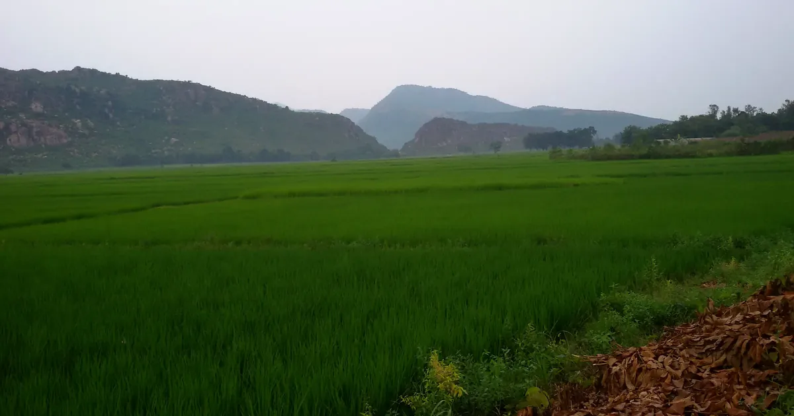

Guides
Understand your land, in plain language.
Plain-language guides to Odisha land records: Bhulekh and the Record of Rights, khata and plot numbers, land measurement units, stamp duty and what to check before buying land.

Bhulekh Odisha plot details by name: find land records by owner name
How to search Odisha land records by owner name on Bhulekh, step by step. Why name searches fail, how to spell names the way the RoR does, and faster ways to find the plot.
Maps
Ownership

Land mutation in Odisha: how to apply and check mutation status
What mutation means in Odisha, when you need it after a sale or inheritance, how to apply at the Tahasil or online, the documents needed, and how to check mutation case status.

Land conversion in Odisha: agricultural land to gharabari, process and fees
How to convert agricultural land to homestead (gharabari) in Odisha under Section 8-A of the OLR Act: who can apply, documents, how the conversion premium is worked out, and how to check status.

How to pay khajana (land revenue) online in Odisha with e-Pauti
Pay Odisha land revenue (khajana) online on e-Pauti, check payment status and download the receipt. Step-by-step guide, what you need, and why the khajana receipt matters.
Buying land

Encumbrance Certificate in Odisha: apply online, fees and how to read it
What an Encumbrance Certificate (EC) is, how to apply for it online on IGR Odisha, the official EC fee structure, how many years to ask for, and what to look for before buying land.

Benchmark valuation in Odisha: how to check the government value of land
What the benchmark value of land is in Odisha, how to check it on IGR Odisha for any village and kisam, how it differs from market price, and how it decides your stamp duty.

Land registration in Odisha: process, slot booking, documents and charges
A step-by-step guide to registering a land sale in Odisha: online deed submission and slot booking on IGR Odisha, the official list of documents, stamp duty, registration fee and other charges.

Is this land government or private? How to check in Odisha
How to tell whether a plot in Odisha is government land or private land from its Record of Rights: the owner entry, khata type and kisam to look for, and the warning signs before you buy.

Buying land in Odisha? A 10-point checklist before you pay
What to check before buying a plot in Odisha: the RoR and every co-owner, the boundary on the cadastral map, kisam and conversion, encumbrance certificate, benchmark value and mutation.
Stamp duty and registration charges in Odisha, with examples
How much does it cost to register land in Odisha? Stamp duty of 5% (4% for women buyers), a 2% registration fee, and how the government benchmark value decides what you pay.
Land records

Kisam of land in Odisha: list of land types and what they mean
A plain-English list of the kisam (land types) you'll see in an Odisha RoR: gharabari, sarad, bahal, berna, atta, bagayat, patita, gochar, anabadi and more, and why kisam matters.

Record of Rights (RoR) in Odisha: what every field means
Khata, plot number, kisam, area in acres and decimals, owner shares and remarks. A field-by-field explanation of the Odisha RoR so you can read your land record with confidence.
Measurements
Getting started
How to find your plot number and khata number in Odisha
Lost the papers or never had them? Five practical ways to find the plot and khata number of land in Odisha, including finding it on a map from where you stand.

How to check land records in Odisha online (Bhulekh RoR guide)
A step-by-step guide to finding the Record of Rights for any plot in Odisha: by khata number, plot number or owner name on Bhulekh, or straight from the map when you don't know the numbers.